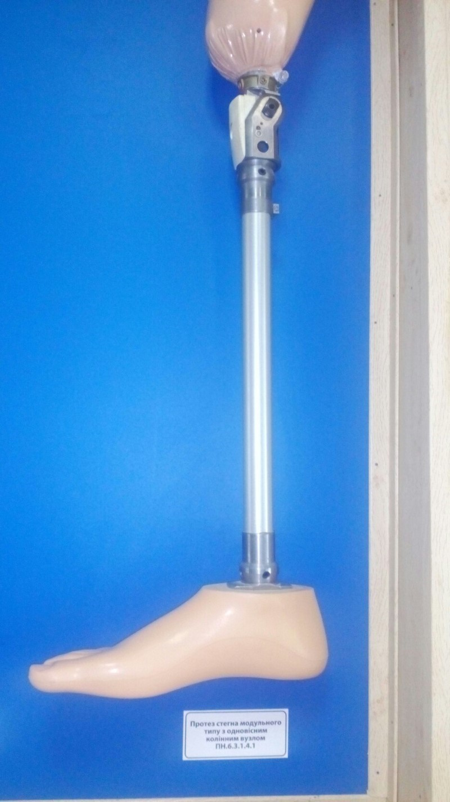
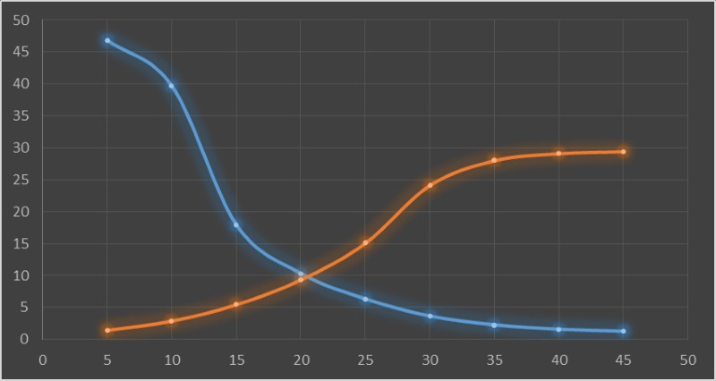
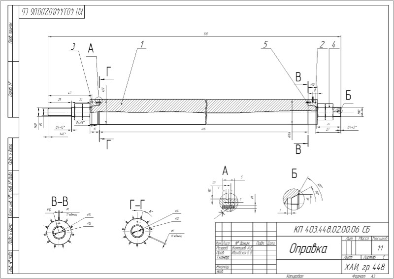
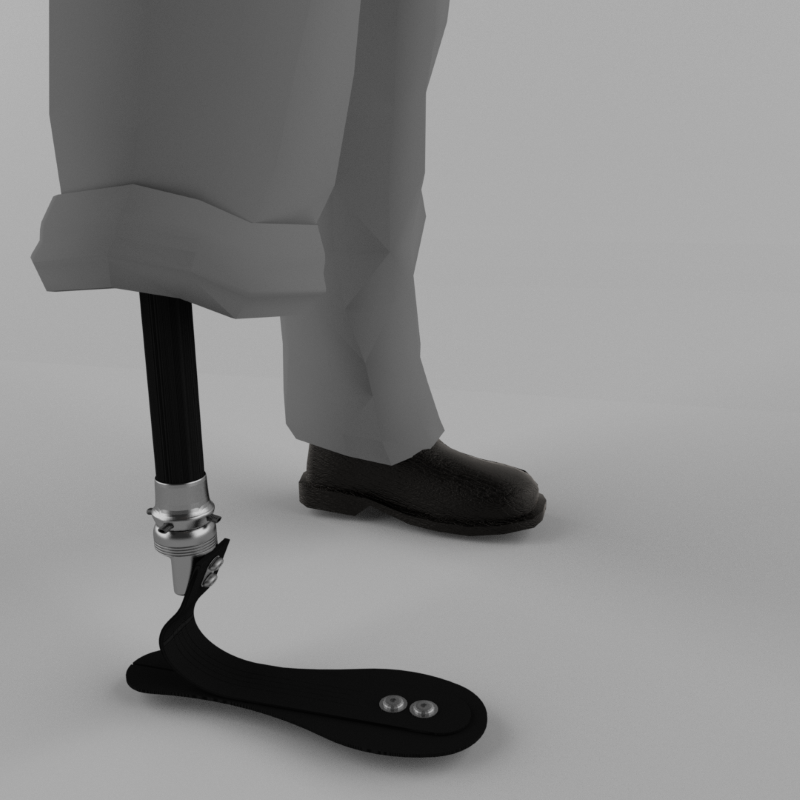

Artificial limb
Design the artificial limb from composite material.

The aim of this work was design the composite strut, at first, as changeover the aluminum one. Then was design an elastic part and hard base.
The original artificial limb looks like this:

This is graphic shows how physical-mechanical characteristics depends on angle of reinforcement of the composite bar.

Blue curve shows how depend reinforcement angle of compressive strength, yellow - bending strength.

After this was design construction of a composite prosthetic ankle. It should be noted that there was design ONLY a composite construction, medical and technical characteristics wasn’t considered by me.

Modeling form for wrapping cylindric part made in the form of a truncated cone with very small ratio of the taper bases. In general case we can say that this part is cylindric and ignore the small difference of diameters. The difference made for better remove composite part from modeling form. There are 22 pins on a different sides (11 on each side) made for engagement carbon fiber while modeling form is rotates. They also serve as support when composite part removing out of the form.

Here is how it looks in a person.


As a conclusion I can say, that composite limb lightweight and nimble-footed, obviously, but on the other hand main disadvantage of it is maintenance problems. Even though it design impact resistible, a one accidental point damage over bearable can make whole limb nonrepairable.